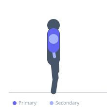

Exercise guide / Chest Dip
Chest Dip
The chest dip is a compound bodyweight or weighted pushing exercise performed on parallel bars with a forward torso lean. By inclining the torso forward, the lower and outer pectoral muscles are emphasized over the triceps, making it an effective mass-building exercise for the lower chest.
Primary muscles
pectoralis major sternal
Secondary muscles
pectoralis major clavicular
deltoid anterior
triceps long head
triceps lateral head
Stabilizers
supraspinatus
subscapularis
Equipment
Dip Bars / Dip Station
Optional
Dip Belt

Starting position
- Support yourself on parallel dip bars with arms extended. Lean your torso forward at approximately 30 degrees by crossing your feet behind and allowing your hips to tilt forward.
Setup
- Set dip bar width to slightly wider than shoulder width. The forward lean is what distinguishes a chest dip from a tricep dip — without it, the triceps dominate.
Steps
- With the forward lean maintained, lower yourself by bending the elbows, allowing them to flare slightly outward.
- Descend until shoulders are at the same height as the elbows or slightly below.
- Press back up to the starting position, maintaining the forward lean throughout.
Coaching cues
- Lean forward — the more you lean, the more chest you use
- Think about pushing the bars behind you rather than pressing straight down
Breathing
- Inhale on descent. Exhale on the press up.
Range of motion
- Upper arms reach parallel or slightly below parallel to the floor at the bottom.
Tempo
- 2-1-1-0
Common mistakes
- Maintaining an upright torso, shifting emphasis to the triceps instead of the chest
- Dipping below the shoulder level of safe range, stressing the anterior shoulder capsule
- Allowing the elbows to flare excessively wide
Safety
- Stop the descent when shoulders begin to feel uncomfortable — this varies by individual
- Individuals with shoulder impingement or anterior shoulder pain should approach with caution
Training
- strength: 4–8 reps
- hypertrophy: 8–15 reps
- endurance: 15–20 reps
- strength: 3–5 sets
- hypertrophy: 3–4 sets
- endurance: 2–3 sets
- Rest: {'strength': 150, 'hypertrophy': 90, 'endurance': 45}